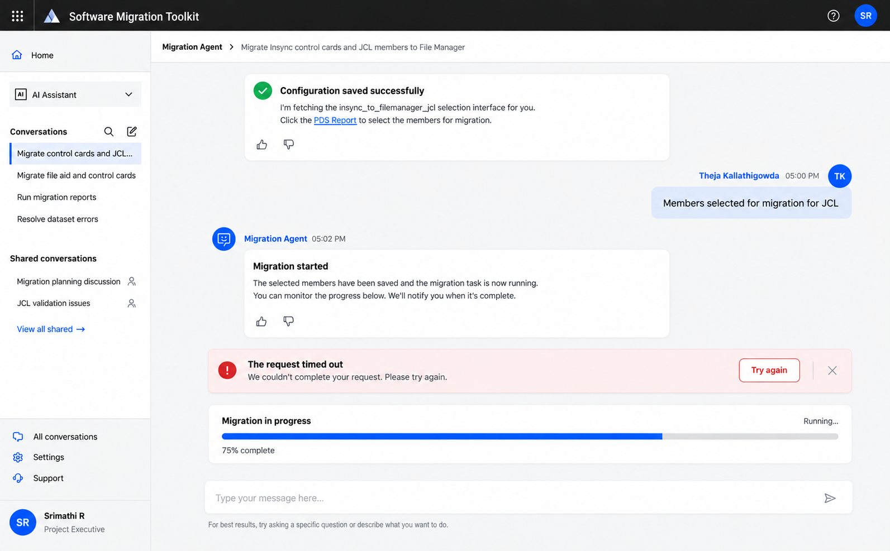
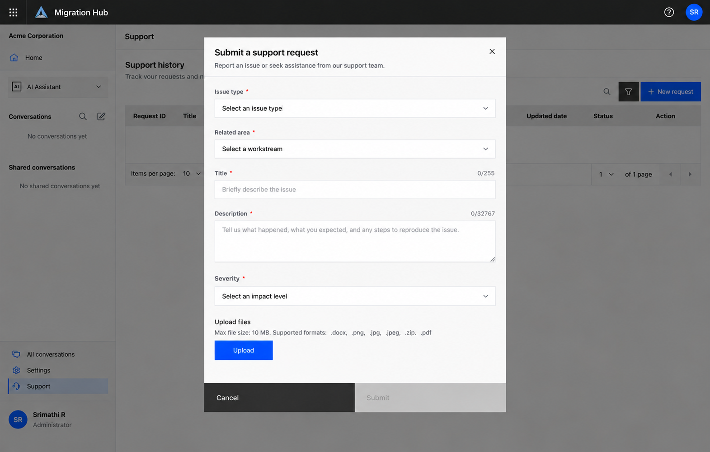
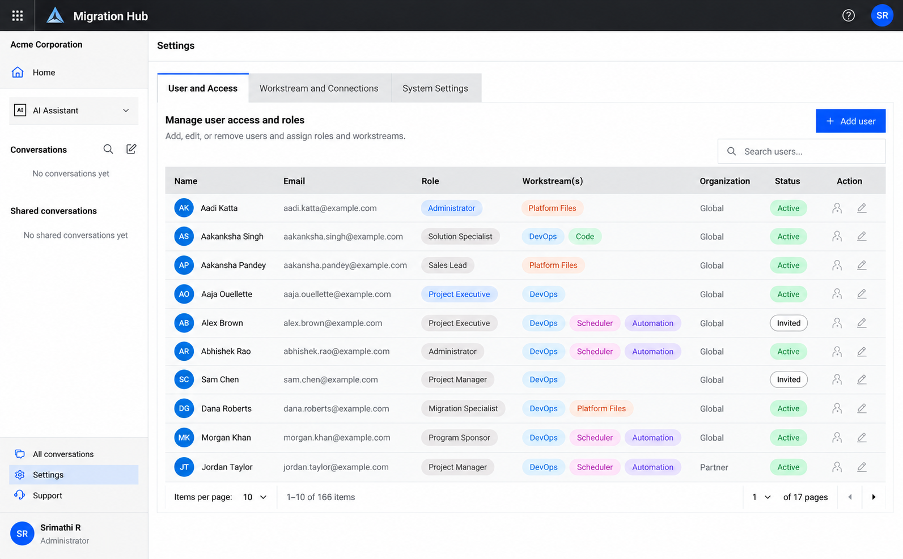
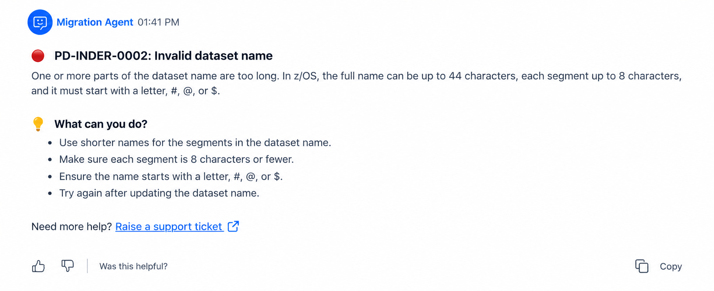

Goal before mechanism
Start with what the user is trying to accomplish; introduce technical concepts when they become relevant.
A UX writing case study for Migration Hub, a conceptual enterprise workspace that helps teams plan and execute application modernization through specialized AI agents.

01 — THE PRODUCT
Migration Hub brings together onboarding, access management, agent discovery, conversational assistance, and migration workflows in one enterprise experience.
The content challenge was to make technically complex actions understandable at the moment users make decisions—without hiding the terminology they need.
02 — ONBOARDING & PROGRESS

CONTENT DECISION
A request can time out while a long-running migration continues. The interface therefore needs to communicate two states without making the user think the entire task failed.
Establishes the current state, confirms what was saved, and tells users where to monitor progress.
Provides a direct recovery action for the request-level timeout.
03 — SUPPORT EXPERIENCE
MICROCOPY SYSTEM
The support flow uses concise labels and helper text to guide useful input. Instead of making users interpret what support needs, the interface gives them a simple structure for describing the problem.
Principle: reduce uncertainty at the point of need.

04 — ADMINISTRATION

CONTENT SYSTEM
Administrative screens are information-heavy. Short, predictable labels make tables easier to scan and help users build a reliable mental model of roles, workstreams, organizations, and access states.
05 — ERROR WRITING
CONTENT MODEL
Instead of exposing raw system output, the error state explains the cause in natural language, gives users concrete recovery steps, and provides a contextual support link only when self-recovery isn't enough.

06 — CONTENT DESIGN PRINCIPLES
Start with what the user is trying to accomplish; introduce technical concepts when they become relevant.
Every instruction should help the user decide what to do next.
Expose technical detail where it supports configuration or troubleshooting.
A failed action should explain what happened and offer a realistic path forward.
Treat labels, statuses, roles, agents, and actions as one connected content system.
Prefer plain language, meaningful links, clear headings, and content that does not rely on color alone.
ABOUT
I'm Srimathi, a technical content professional moving deeper into UX writing and content design. My technical background helps me understand complex systems, collaborate with subject-matter experts, and translate product behavior into language users can act on.
I’m especially interested in AI products, developer-facing experiences, and the moments where good content can turn complexity into confidence.
Get in touch ↗